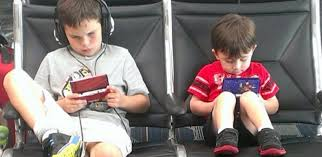
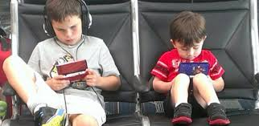

Afectaciones Físicas
El uso prolongado de pantallas puede generar problemas como fatiga visual, dolores de cabeza y mala postura corporal en los niños.
Comprendiendo los riesgos del uso excesivo de teléfonos, tablets y computadores.
El uso prolongado de pantallas puede generar problemas como fatiga visual, dolores de cabeza y mala postura corporal en los niños.
El abuso de videojuegos y redes sociales puede afectar la atención, memoria y capacidad de concentración.
El aislamiento, irritabilidad o disminución de habilidades sociales son efectos comunes del uso excesivo de dispositivos.
Si deseas recibir una guía gratuita con recomendaciones profesionales, completa el siguiente formulario: